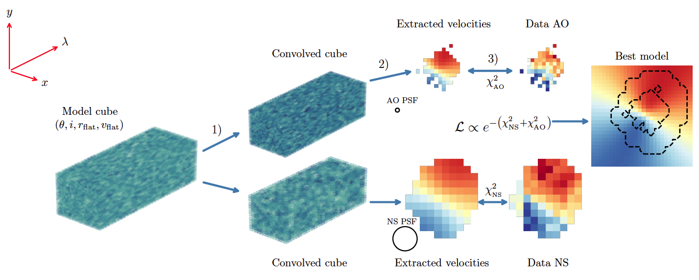

NOTE: This will be updated once the first paper is published.
My PhD project, under Karl Glazebrook and co-supervised by Deanne Fisher and Sarah Sweet is about the evolution of galaxy angular momentum through cosmic time. The galaxies I study are very far away (very faint), so we use data from some of the largest existing telescopes such as Keck, VLT and HST to measure their properties. In particular, I use high-resolution integral field spectrocopic (IFS) data obtained with adaptive optics to study their angular momentum content in detail.
In the first paper, I am measuring the angular momentum of a sample of 10 galaxies by combining data at different spatial resolutions in order to increase the precision in the measurement. The following image is an ilustration of the employed method:
